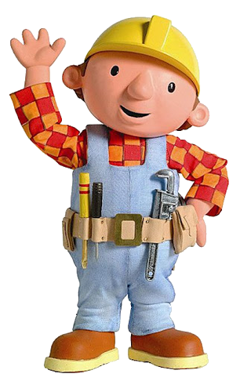

Bob the Builder, the legendary figure in the world of construction, has been bringing people's dream projects to life for over 25 years. With his trusty team of construction vehicles and his can-do attitude, Bob has tackled everything from small home repairs to massive skyscrapers, all while teaching the importance of teamwork, problem-solving, and having fun.
Bob's journey began in the small town of Fixham, where he discovered his passion for building and fixing things at a young age. He studied construction and engineering, honing his skills and eventually starting his own construction company. Bob's reputation for quality work and his innovative solutions to complex construction challenges quickly spread, making him the go-to builder in the region.
Outside of construction, Bob is an avid environmentalist, always seeking ways to incorporate sustainable practices into his projects. His efforts have earned him several awards for sustainability and green building.
When he's not on a construction site, Bob enjoys spending time with his cat Pilchard, hiking, and playing guitar. He believes in giving back to the community and often volunteers for local charities and mentors young builders.